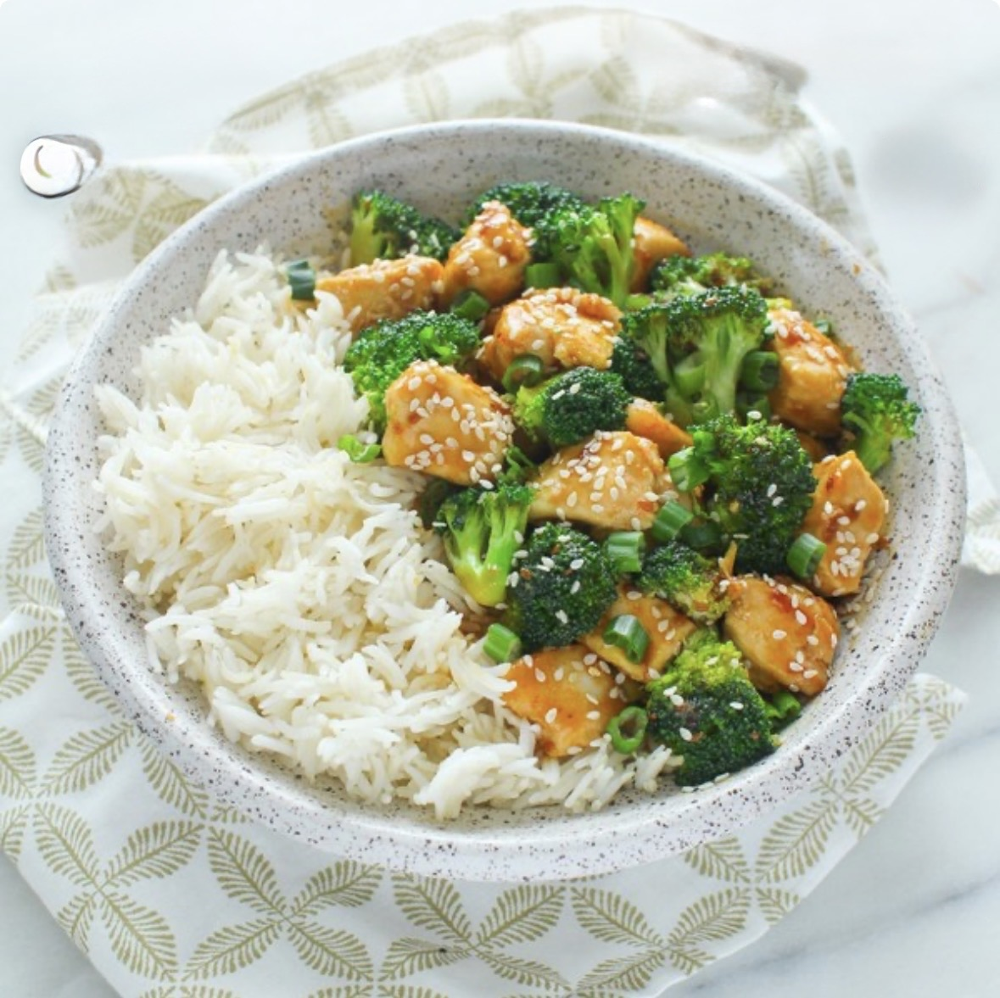

Ingredients
- 1 pound broccoli, cut into florets
- 1 ½ pounds boneless, skinless chicken breast, cut into 2-inch cubes
- 1 teaspoon kosher salt
- 2 tablespoons cornstarch
- 2 tablespoons sesame oil
- 2 tablespoons sesame seeds
- 3 green onions, white and green parts thinly sliced
- ¼ cup water
- 1 tablespoon cornstarch
- ¼ cup low-sodium soy sauce or tamari
- 1 tablespoon sesame oil
- 1 teaspoon chili sauce, (such as Sambal Oelek)
- 2 tablespoons light brown sugar
- 2 tablespoons honey
- 2 garlic cloves, minced
Instructions
- Fill a large pot with water and salt it. Bring the water to a boil over high heat. Add the broccoli and cook until bright green, about 3 minutes. Drain and set aside.
- In a large bowl, combine the chicken, salt and 2 tablespoons of cornstarch. Toss until the chicken is thoroughly and evenly coated.
- Make the sesame sauce. In a small bowl, whisk together the water and 1 tablespoon cornstarch to make a slurry. Stir in the soy sauce, sesame oil, chili sauce, brown sugar, honey and minced garlic.
- Heat the remaining 2 tablespoons sesame oil in a large skillet over medium-high heat. Once the oil is glistening, working in batches as needed, add the chicken and cook, turning, until browned on all sides and cooked through, about 10 minutes total.
- Add the broccoli and the sauce to the skillet. Bring to a simmer and cook until the sauce has thickened, about 5 minutes.
- Garnish with sesame seeds and green onions before serving.